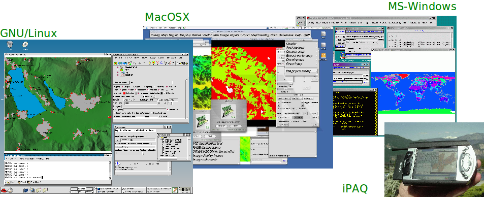
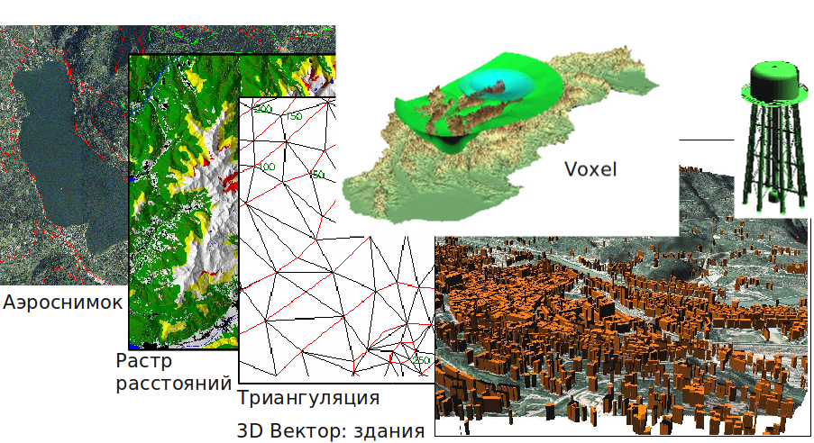
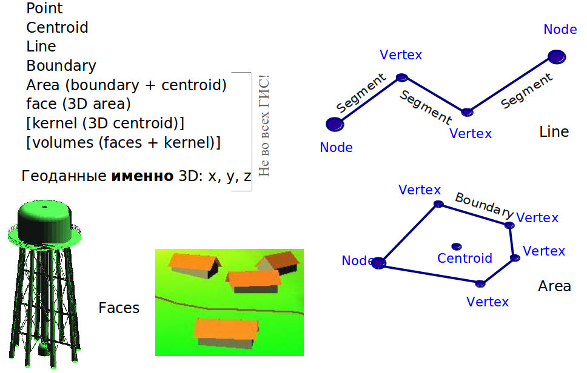
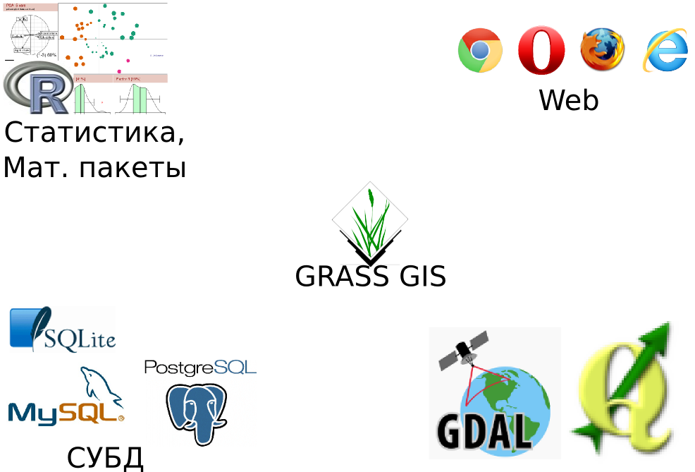

name: inverse layout: true class: center, middle, inverse --- #GRASS GIS --- layout: false # Содержание 1. Обзор GRASS GIS 2. Создание набора данных. Импорт данных 3. Векторные данные в GRASS GIS 3.1 Структура 3.2 Команды обработки векторных данных 3.3 Проверка и коррекция топологических ошибок 3.4 Генерализация 4. Примеры задач 5. Растровые данные --- #GRASS: Geographic Resources Analysis Support System * Разрабатывается с 1984 года (USA-CERL). Все это время была открытой ГИС. * Кроссплатформенная: доступны версии для GNU/Linux, MS-Windows, Mac OSX, SUN, ...; 32/64 битные системы. * Хорошо документирована, большие коллекции данных. Коммерческая поддержка. * Русское зеркало: http://grass.gis-lab.info/index.php .center[  ] --- # GRASS GIS это: * Растровая 2.5D/3D ГИС * Вектроная 2D/3D топологическая ГИС * Анализ и обработка графов * Система обработки изображений * Система 2D и 3D визуализации * Поддержка баз данных:dbf, PostgreSQL, MySQL и sqlite. MS SQL, Oracle (ODBC) * Поддерживает все распространенные растровые и векторные форматы --- # Типы данных * 2D Растровые данные, включая спутниковые снимки и аэрофотосъемку * 3D (Voxel) данные * 2D/3D векторные данные с поддержкой топологии  --- # Растровые данные * Растровые данные: представляют собой сетку пикселей, содержащих некоторые значения какого-либо параметра (высота, концентрация и т.п.). * Воксельные данные: обобщение растра, переход к трем измерениям. .left-column[  ] .right-column[  ] --- # Векторные данные  --- ## Взаимодействие с другими программами/системами .center[  ] --- # Кому нужна GRASS GIS --- # Терминология * [DATABASE] --- каталог данных. Здесь хранятся все проекты. *Аналогия*: <<здание библиотеки>>. * [LOCATION] --- проект (область проекта). Проект определяется системой координат и охватом. В проекте хранится вся информация об интересующей территории (карты), настройки подключений к БД и т.п. *Аналогия*: <<читальный зал по конкретной отрасли знаний>>. * [MAPSET] --- набор карт (набор данных). Часть проекта. Здесь могут храниться специфические карты (слои), для набора можно настроить отдельные права доступа для определенных пользователей, задать охват, отличный от охвата по умолчанию. *Аналогия*: <<книжный шкаф с книгами по определенной тематики или определенного автора>>. * [REGION] --- вычислительный регион (охват). Текущее <<окно>>, в котором выполняются действия пользователя. --- ### 1. Запуск GRASS, создание БД и области ### 2. Импорт данных ```bash v.in.ogr input=NVS/data/boundary-polygon.shp \ layer=boundary-polygon output=adm geometry=None ``` ### 3. Знакомство с интерфейсом * Окно карты * Окно менеджера слоев * Меню * Панели инструментов ### 4. Пример автоматизации Пример ```bash for map in /путь/к/shp-файлам/*shp do newname=$(basename ) v.in.ogr input=$map layer=$newname output=adm done ``` --- ## Перепроецирование ### Пересчет координат ```bash g.region -pg m.proj --help m.proj -i \ coord=74.23,55.6 \ proj_out="+proj=merc +lon_0=0 +k=1 +x_0=0 +y_0=0 +ellps=WGS84 +towgs84=0,0,0,0,0,0,0 +units=m +no_defs" 8263245.80|7443911.50|0.00 ``` ### Перепроецирование в новую область 1. Создаем новую область 2. Перепроецируем (v.proj, r.proj) ```bash v.proj input=adm location=GRASS6_NSB mapset=PERMANENT for map in $(v.proj loc=GRASS6_NSB -l) do v.proj loc=GRASS6_NSB in=$map out=$map done ``` --- # Работа с атрибутами ## Поддержка SQL: * геометрия хранится в GRASS * аттрибуты в СУБД по выбору (dbf, postgres, sqlite, ...) * c одним объетом может быть связано несколько СУБД ## Выборки ```bash v.db.select adm v.extract --help ``` **Задача:** посчитать число районов в Новосибирской области. **Задача:** Создать карту районов, удалив все лишнее, результат записать в новый слой. --- ## Полезное: ```bash v.db.addcol v.db.update v.report adm un=kilometers opt=area ``` ## Запросы по координатам: ```bash v.what tmp coor=9221425,7340809 ``` --- #Инструменты правки топологии в GRASS Основные инструменты: * v.build --- построение топлогии (вызывается автоматически при импорте объектов); * v.clean --- основной инструмент обработки топологии: ```bash v.clean input=name output=name [type=string[,string,...]] [error=name] tool=string[,string,...] [thresh=float[,float,...]] ``` --- # Основные параметры v.clean ```bash v.clean input=name output=name [type=string[,string,...]] [error=name] tool=string[,string,...] [thresh=float[,float,...]] ``` * input: название входной векторной карты, для которой проверяется/чистится топология * output: название выходной векторной карты, в которой сохраняется результат * type: тип объектов, которы обрабатываются (point, line, boundary, centroid, area, face, kernel). По умолчанию: point, line, boundary, centroid, area * error: название выходной карты, в которую записываются ошибки * tool: инструменты обработки * thresh: пороговые значения для инструментов обработки топологии --- # Tool * break: Разбивать линии на пересечениях. Также разбивает линии, если они образуют <<сплющеные>> петли. Например, линия (0 0, 1 0, 0 0) будет разбита на две: (0 0, 1 0) и (1 0, 0 0). * snap: Притягивание вершин друг к другу в пределах заданного порога. При большом пороге может повреждать топологии при type=boundary. (Такие <<притянутые>> границы могут быть обработаны последовательностью break,rmdupl,rmsa). * rmdangle: Удаление <<висящих>> узлов. * chdangle: Изменение типа <<висящего>> узла с границы на линию. * rmbridge: Удаление <<мостов>> между островами. * chbridge: Изменение типа <<моста>> между островами с границы на линию. * rmdupl: Удаляет дубликаты геометрий. (Категории!!!) Удобно использовать после инструмента break. * rmdac: Удаляет дубликаты центроидов (они могут появляться после удаления границ). * bpol: Чистит топологию при импорте из нетопологического формата. Границы разбиваются в каждой точке, общей для двух геометрий. (Похоже на break, но работает быстрее, зато требует больше памяти). После применения стоит прогнать rmdupl. --- # Tool (продолжение) * prune: Прореживает узлы, которые лежат ближе указанного порога. Если чистятся границы, то топология сохраняется (отличие от snap). * rmarea: Удаляет площади, которые меньше заданного порога. Удаление площади происходит за счет удаление наиболее протяженной общей границы и удаления всех неразделяемых границ. * rmline: Удаление всех линий нулевой длины. * rmsa: Удаление <<щелей>>: .center[ <img src="img/v_clean_rmsa.png" /> ] --- ## Генерализация инструментами GRASS Генерализация в момент импорта данных (уделение полигонов меньших заданого порога, <<прищелкивание>> узлов): ```bash v.in.ogr -e dsn=regions2010.shp out=regions min_area=1 snap=100 ``` Основные инструменты: v.clean и v.generalize: ```bash v.clean in=regions out=sipmle type=boundary tool=prune,rmarea thresh=2000,4000000 v.generalize input=name output=name [type=string[,string,...]] method=string threshold=float ... [where=sql_query] ``` --- ## Обзор методов упрощения геометрий v.generalize * Инструмент reduction -- самый простой алгоритм из представленных, удаляет точки линии, которые лежат около друг-друга ближе, чем на заданное пороговое расстояние. Таким образом, алгоритм использует один задаваемый пользователем параметр -- максимально допустимое расстояние, при котором точки считаются идентичными. * Инструмент douglas реализует классический алгоритм Дугласа-Пекера. Инструмент принимает один параметр -- максимальное допустимое отклонение генерализованной линии от изначальной. * Инструмент douglas_reduction представляет собой модификацию алгоритма Дугласа-Пекера, в которой задается дополнительный параметр -- желаемое количество точек генерализованной линии, которое требуется достичь (измеряется в процентах по сравнению с количеством точек исходной линии). * Инструмент lang также похож на алгоритм Дугласа-Пекера. Основное отличие состоит в том, что lang представляет собой не рекурсивный алгоритм. Поэтому, во избежание рекурсии алгоритм использует дополнительный параметр (look_ahead), задающий число точек, которые требуется просмотреть --- ## v.generalize (продолжение) * Инструмент reumann использует коридор из двух параллельных линий заданной ширины. Для построения коридора берутся две последовательные точки линии и в направлении, заданном отрезком между точками, строится коридор. Далее определяется место выхода линии за границы коридора, в результате точки и сегменты исходной линии, которые попали внутрь коридора, замещаются одним сегментом и процесс повторяется со следующей парой непросмотренных точек. Параметр алгоритма -- ширина коридора. * Инструмент boyle сглаживает методом скользящего среднего: алгоритм расчитывает среднее между look_ahead последовательных точек линии, начиная с текущей. Таким образом алгоритм использует единственный параметры -- ширину окна look_ahead. --- ## v.generalize (продолжение) * Инструмент sliding_averaging сначала расчитывает средние кординаты для look_ahead точек до и look_ahead после текущей точки (т.е. усредняется 2*look_ahead+1 точка), полученные координаты запоминаются. Целевая (сглаженная) точка помещается на отрезке, проведенном между исходной и усредненной точкой, местоположение на котором задается параметром slide (0 -- исходная точка, 1 -- усредненная точка). Соответственно, алгоритм использует два параметра: ширину окна look_ahead и степень сдвига slide. * Инструмент distance_weighting аналогичен предыдущему, за исключением того, что усредненная точка расчитывается методом взвешенного среднего. Как и sliding_averaging, алгоритм использует два параметра: ширину окна look_ahead и степень сдвига slide. * Эрмитова интерполяция --- алгоритм на базе кубический сплайнов. --- ## Задача 1. Очистить ошибки топологии, связанные с нахлестами районов, получившиеся при импорте данных из нетопологического формата. 2. Произвести генерализацию районов. --- ## Редактирование геометрий ### v.edit ## Пересечение геометрий ### v.overlay ### v.select ## Буфферные зоны ### v.buffer ### Задачи Длину ж/дорог в Чановском районе; Найти переправы через реки в Чановском районе. --- # Анализ сетей * v.net: создание сети. * v.net.iso: изодистанции * v.net.path кратчайший путь ??? Найти ближайший парк для прогулки v.select ain=highway_line bin=tmp1 out=tmp3 --o echo "8550265|7381600|1" | v.in.ascii out=myhotel v.distance -p from=myhotel to=tmp3 upload=dist column=dist v.net tmp3 points=myhotel out=streets_net op=connect thresh=30 v.db.addcol streets_net col="navcost double precision" v.db.update streets_net col=navcost val=100 v.net.iso in=streets_net out=streets_net_iso ccats=1-1000000 nlayer=2 costs=200,400,600,800 afcolumn=navcost v.net.iso in=streets_net out=streets_net_iso ccats=1-10000 nlayer=2 costs=200,400,600,800 --o % v.type roads out=roads1 type=boundary,line,centroid,point % v.clean input=roads1@PERMANENT type=line tool=snap,break,rmdupl,rmsa thresh=20,0,0,0 output=test --o % v.category test opt=report % v.edit test type=point tool=delete cat=1-400 % Считаем изолинии: % v.net streets points=schools out=streets_net op=connect thresh=200 % v.net.iso in=streets_net out=streets_net_iso ccats=1-1000000 nlayer=2 costs=200,400,600,800 % v.category streets_net_iso opt=report # 5 cats % Считаем кратчайший путь между двумя узлами: % 1 - ID, растояние считается от узла категории 15 до узла категории 21 % номер категории можно узнать, если включить отображение "Display category numbers" в менеджере слоев и показать категории со слоя 2 (v.net op=connect складывает присоединенные узлы во второй слой) % echo "1 15 21" | v.net.path streets_net out=spath